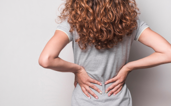

ကျောရိုးဆစ်သေး ရောင်တာက မွေ့ရာကြောင့်လား ခါးမကောင်းလို့လား

ကျောရိုးဆစ်သေး ရောင်တာက မွေ့ရာကြောင့်လား ခါးမကောင်းလို့လား
ထလိုက်တာနဲ့ နောက်ကျောကနေ တဆစ်ဆစ်နာနေပါသလား။ ဇက်တွေတောင့်နေပြီး လှုပ်မရအောင် ဖြစ်နေပြီလား။ ကားထဲကနေ ကုန်းကွပြီး ထွက်ရလောက်အောင် ကြည့်ရဆိုးနေပြီလား။ ဇက်နာတာ ခါးနာတာတွေက တော်တော်ဆိုးပါတယ်။ သာမန်ကြွက်သားနာတာ အရွတ်နာတာတွေကြောင့် ဖြစ်နိုင်သလို ဆက်တိုက်နာနေပြီ ဆိုရင်တော့ ကျောရိုးဆစ်သေးတွေ ရောင်တာလားဆိုပြီး စဉ်းစားစရာရှိပါတယ်။
ကျောရိုးဆစ်သေးဆိုတာ ဘာလဲ
ကျောရိုးဆစ်သေးဆိုတာ ကျောရိုးတစ်လျောက် ကျောရိုးဆစ်မကြီးတွေ တစ်ခုနဲ့တစ်ခု အကြားက အဆစ်တွေပါပဲ။ တခြားအဆစ်တွေလိုမျိုးပဲ သူ့မှာလည်း အရိုးနုနဲ့ ရိုးတွင်းခြင်ဆီတွေ ရှိပါတယ်။ ဒီကျောရိုးဆစ်သေးတွေက ကျောရိုးမကြီးကို လွတ်လွတ်လပ်လပ် လှုပ်ရှားနိုင်အောင် ကွေးနိုင်ဆန့်နိုင်အောင် ကူညီပေးပါတယ်။
ကျောရိုးဆစ်သေးတွေကလည်း တခြားအဆစ်တွေလိုပဲ အသက်ကြီးလာတာကြောင့်ပဲ ဖြစ်ဖြစ် ထိခိုက်ဒဏ်ရာကြောင့်ပဲဖြစ်ဖြစ် သူ့မှာရှိတဲ့ အရိုးနုလေးတွေ ပွန်းလာပါတယ်။ နောက်ပိုင်းမှာ အဆစ်လေးတွေ ရောင်ရမ်းလာပြီး နာတာ၊ ကျောရိုးတောင့်တင်းတာ၊ ကျောရိုးမှာရှိတဲ့ အာရုံကြောတွေ ဖိမိတာမျိုး ဖြစ်လာနိုင်ပါတယ်။
လည်ပင်းပိုင်းပြဿနာများ
ကျောရိုးမှာ လည်ပင်းပိုင်း နောက်ကျောပိုင်းနဲ့ ခါးပိုင်းဆိုပြီး ခွဲထားပါတယ်။ လည်ပင်းပိုင်းက ကျောရိုးဆစ်သေးတွေ ရောင်ရမ်းတာကို ကျီးပေါင်းတက်ခြင်း (Cervical Spondylosis) လို့ ခေါ်ကြပါတယ်။ အသက် ၆၀ အထက် သက်ကြီးရွယ်အိုတွေရဲ့ ၈၅ ရာခိုင်နှုန်းလောက်က ဒီပြဿနာကို ခံစားနေကြရပါတယ်။
အဆစ်ရောင်တာ ပျက်စီးလာတာတွေကြောင့် ကျောရိုးဆစ်တွေပါ ထိခိုက်လာပြီး နာကျင်လာပါတယ်။
ဒါ့ပြင်-
- ဂုတ်ပိုး တောင့်တာ နာတာ (လှုပ်လိုက်ရင် ပိုဆိုးပါတယ်။)
- လည်ပင်းလှုပ်တဲ့အခါ အရိုးတွေ တစ်ခုခုနဲ့ ဖိကြိတ်သံထွက်တာ
- ခေါင်းကိုက်တာ
- ကြွက်သားတွေတင်းပြီးနာတာ
- အိပ်ရာထချိန်နဲ့ ဝင်ချိန်မှာ ပိုနာတတ်တာ
- ဂုတ်ပိုးကနေ ပုခုံး/ ပုခုံးကြားထိ နာတတ်တာ
- လက်မောင်းတလျှောက် နာတာ စတာတွေ ဖြစ်တတ်ပါတယ်။
ခါးပိုင်းပြဿနာများ
တခြားအဆစ်တွေလိုပဲ ကျောရိုးဆစ်သေးတွေက အသက်ကြီးလာတဲ့အခါ အရိုးနုတွေ ပါးလာတာ ခြင်ဆီတွေနည်းလာတာမျိုး ဖြစ်တတ်ပါတယ်။ အရိုးနုတွေ ပျက်စီးကုန်တဲ့အတွက် ဒီနေရာမှာ အရိုးအသစ်တွေ ထွက်လာပြီး အာရုံကြောတွေကို ဖိတာကြောင့် ခါးနာတာ လှုပ်ရှားရခက်တာတွေဖြစ်လာတာပါ။ ကိုယ်ကိုယ်တိုင်တောင် သတိမထားမိဘဲ နာတာသက်သာအောင် ခါးကိုင်းပြီး လမ်းလျှောက်တတ်ပါတယ်။ ဒါ့ပြင်
- လှဲရာက ထလိုက်ရင် ခါးနာခြင်း
- ခါးကို နောက်လှန်တာ ဒါမှမဟုတ် ဘေးစောင်းမိလျှင် နာခြင်း
- ခါးနာရာမှ တင်ပါးနှင့် ပေါင်ကြောတစ်လျှောက် ပျံ့သွားတတ်ခြင်း
- နောက်ကြောနှင့် ခြေထောက်တလျှောက် ထုံခြင်း ကျဉ်ခြင်း စတာတွေ ဖြစ်တတ်ပါတယ်။
အာရုံကြောပိခြင်း
ကျောရိုးဆစ်သေးတွေ ပျက်စီးကုန်တာကြောင့် အာရုံကြောမကြီးတွေကို ဖိမိပါတော့တယ်။
အာရုံကြောတွေ ဖိမိတဲ့အခါ-
- လက်မောင်းမှ လက်ချောင်းအထိ တစ်လျှောက်လုံး ထုံခြင်း၊ အားနည်းခြင်း
- လမ်းလျှောက်ရခက်ခြင်း၊ ဟန်ချက်ပျက်ခြင်း၊ အားနည်းခြင်း
- တင်ပါးနှင့် ခြေထောက်တလျှောက် ထုံခြင်း၊ ကျဉ်ခြင်း၊ နာခြင်း တွေ ဖြစ်နိုင်ပါတယ်။
ဘာကြောင့် ဖြစ်ရတာလဲ
၁။ Osteoarthritis
တခြားအဆစ်တွေလိုပဲ ကျောရိုးဆစ်သေးတွေလည်း Osteoarthritis ဖြစ်ပြီး ရောင်ရမ်းနိုင်ပါတယ်။
၂။ Synovial cyst ( ခြင်ဆီအိတ်)
ခြင်ဆီအိတ်တွေကြောင့်လည်း ကျောရိုးဆစ်တွေ ပျက်စီးနိုင်ပါတယ်။ သူ့ဟာသူနေရင် ပြဿနာမရှိပေမဲ့ တစ်ခါတလေ အာရုံကြောတွေကို ဖိတာမျိုးလည်း ဖြစ်တတ်ပါတယ်။
၃။ ကျောရိုးဆစ်ကြား နေရာကျဉ်းခြင်း
အကြောင်းအမျိုးမျိုးကြောင့် ကျောရိုးဆစ်ကြား နေရာကျဉ်းသွားတဲ့အခါ အဆစ်တွေပွန်းတာ ရောင်တာ ဖြစ်တတ်ပါတယ်။ နောက်ပိုင်းကျရင် ကျောရိုးဆစ်သေးတွေပါ ရောင်ရမ်းတာမျိုး ဖြစ်လာနိုင်ပါတယ်။
၄။ အဝလွန်ခြင်း
အဝလွန်ခြင်းကြောင့် အဆစ်တွေပေါ် ဒဏ်ပိပြီး ပျက်စီးတတ်ပါတယ်။
၅။ အသက်
အသက်ကြီးလာတာနဲ့အမျှ အဆစ်ရောင်တာ ဖြစ်နိုင်ချေများပါတယ်။
၆။ လိင်အမျိုးအစား
အသက် ၄၅ နှစ် အောက်ဆိုရင် Osteoarthritis က အမျိုးသားတွေမှာ အဖြစ်များပြီး ၄၅ နှစ် ကျော်ရင်တော့ အမျိုးသမီးတွေမှာ အဖြစ်များပါတယ်။
ရောဂါရှာဖွေခြင်း
ရောဂါရှာဖွေဖို့အတွက် ရောဂါရာဇဝင်မေးမြန်းတာ၊ စမ်းသပ်တာ၊ ဓာတ်မှန်ရိုက်တာ စတာတွေ ပြုလုပ်ရပါမယ်။ လိုအပ်ရင် ထုံဆေးထိုးစစ်ဆေးတာ (Facet Block) ကိုလည်း လုပ်နိုင်ပါတယ်။
ကုသနည်းများ
ကုသနည်းများစွာ ရှိတဲ့အတွက် ဆရာဝန်နဲ့ တိုင်ပင်ပြီး မိမိနဲ့ သင့်တော်ရာကို ရွေးချယ်နိုင်ပါတယ်။
၁။ အနားယူခြင်း
နာနေတဲ့အချိန်မှာ အနားပေးတာက ရောဂါလက္ခဏာကို သက်သာစေပါတယ်။
၂။ အထောက်အကူပြု ပစ္စည်းများသုံးခြင်း
အထူးပြုလုပ်ထားတဲ့ ခေါင်းအုံးတွေ Braces တွေက နာတာကို သက်သာစေတာကြောင့် မနက်နိုးလာတဲ့အခါ ပြဿနာ မရှိတော့ပါဘူး။
၃။ အကိုက်အခဲပျောက်ဆေး အပျော့စားများ
အကိုက်အခဲပျောက်ဆေးတွေကလည်း အတိုင်းအတာ တခုအထိ နာတာကို သက်သာစေပါတယ်။
၄။ အကြောပြေဆေးများ
ကြွက်သားတွေ တင်းပြီး မခံနိုင်အောင် နာတယ်ဆိုရင်တော့ ဆရာဝန်နဲ့တိုင်ပင်ပြီး အကြောပြေဆေးတွေ သောက်လို့ ရပါတယ်။
၅။ လေ့ကျင့်ခန်းလုပ်ခြင်း
နားလည်တတ်ကျွမ်းတဲ့သူနဲ့ တိုင်ပင်ပြီး အထိုင်အထ လေ့ကျင့်ခန်းတွေလုပ်လို့ရပါတယ်။ ဒါကလည်း ဝေဒနာကို သက်သာစေပြီး လှုပ်ရှားရ အဆင်ပြေစေပါတယ်။
ဒါတွေနဲ့မှ မသက်သာဘူးဆိုရင်တော့ ဆရာဝန်နဲ့ တိုင်ပင်ပြီး ခွဲစိတ်ကုသဖို့ကို စဉ်းစားရမှာပါ။
ဘာသာပြန်ရေးသားသူ- ဒေါက်တာ ထက်ထက်ဇော်ဝင်း